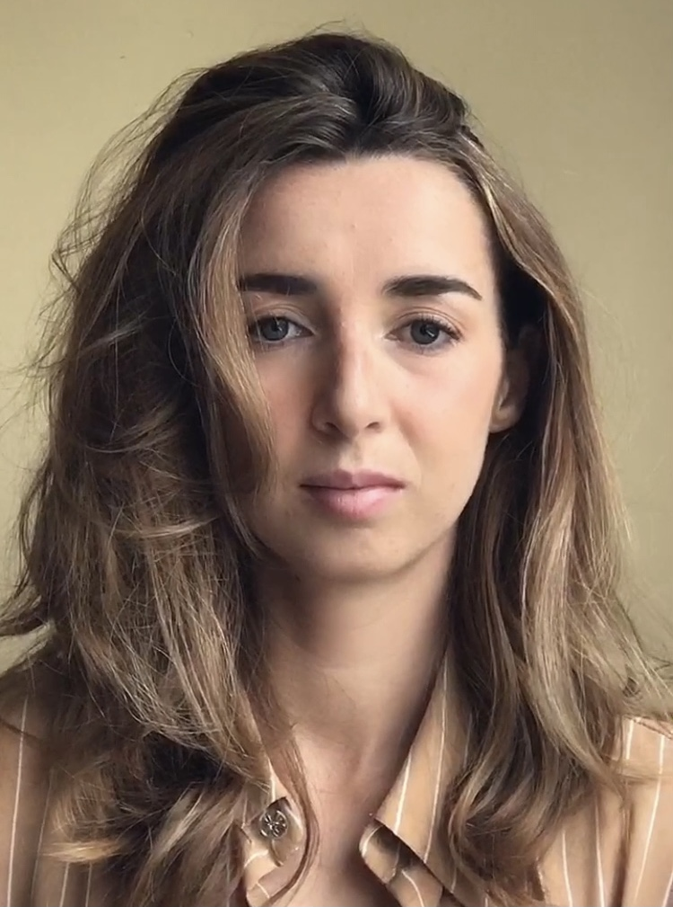

Ainhoa Etxeberria
Graphic design and web developer

Education
-
(2019-2021) Certificate of Higher Education in Characterization, Special
Effects and Professional hair and make-up for media & performance. CIP
San Jorge, Santurtzi.
- (2017-2019) QC Makeup academy
- Professional Special FX Makeup
- Master Makeup Artistry
- Pro Makeup Workshop
-
(2013-2015) Certificate of Higer Education in Graphic Desigh. Ceinpro,
San Sebastian
-
(2011-2013) General Certificate of Education: Oteitza Lizeo
Politeknikoa, Zarautz
Work experience
- (2022 - now) English teacher on a language school. Kids&Us.
-
(2021-2022) Retail. Cashier, Sales associate, customer servide and
organization at a surf shop. Gross beach, San Sebastian.
-
(2021) Sales Consultant, beauty advisor and cashier on a fragance and
makeup store. Clarel.
-
(2021) Hair and makeup artist and character design for media (JYT
kreaktibos). short movies and photoshoots.
- (2018 - 2021)English and Basque teacher. Freelance.
-
(2015-2017) Personal assistant/nanny in the UK and USA. Skilled in
communication, time managment and responsible of the safety and
well.being of three kids.
-
(2015) Graphic and web designer. Worked on their website and marketing.
Argiled.
Skills
Computer knowledge
- Adobe: Photoshop, Illustrator, Indesign
- Microsoft office
- Visual code
- Social media
Languages
- Basque: Mother tongue
- Spanish: Mother tongue
- English: high level
Others
- Ease of integration in work teams
- Ease of learning new things
- organizational skills
- customer care
- Availability to travel
- Driving license